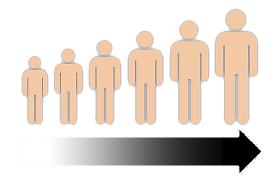
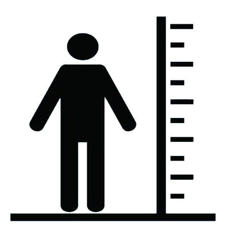

Cálculo de IMC
Masculino
Seleccione su sexo
Femenino
Seleccione su edad
1 año
2 años
3 años
4 años
5 años
6 años
7 años
8 años
9 años
10 años
11 años
12 años
13 años
14 años
15 años
16 años
17 años
18 años
19 años
20 o más años


Estatura:
(En metros, utilizar decimales)
Peso:
(En kg, se pueden usar decimales)
Resultado: